Particle System Editor
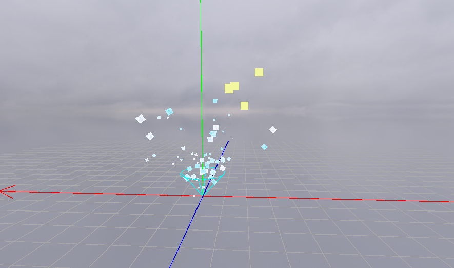
Overview
I made this particle system for my teams game engine. There was no way for our procedural artist to create partciles in our schools game engine, so I made this completly from scratch. When creating this tool I took inspiration from Unitys particle system when deciding what to add.
Shape & Emission
All particles always spawn with a set lifetime. This value can be the same for every particle, or randomly generated at spawn. Every property in the particle system that can be random has a options to choose between a fixed Value, a random value in a Range or a randomly chosen value of Either left or right value.
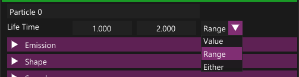
To spawn the particles I have settings for when to spawn them in Emission and where to spawn them in Shape. In emission, you can edit how many particles to spawn per seconds, how many per distance (Used to spawn when physically moving the particle system) and bursts. For burst emissions you can set how many burst in total, how many particles in every burst and the time between every burst.
If Emit World is checked particles will move independetly once spawned. Otherwise they will move locally to the transform of the particle system.
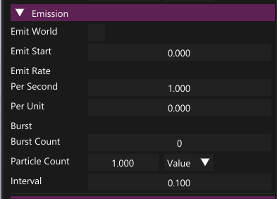
In Shape, you can choose between emitting in a sphere, cone or box.There are more settings for every shape type. The cone has settings for radius and height, and a arc setting that can controll angle thing. You can also controll thickness, which when smaller will make particles spawn more to the edge of the shape.
The direction the particles spawn with is determined by their spawn position and the emitors shape type At the request of our procedural artists, I also added an option to spawn particles with a fixed direction.
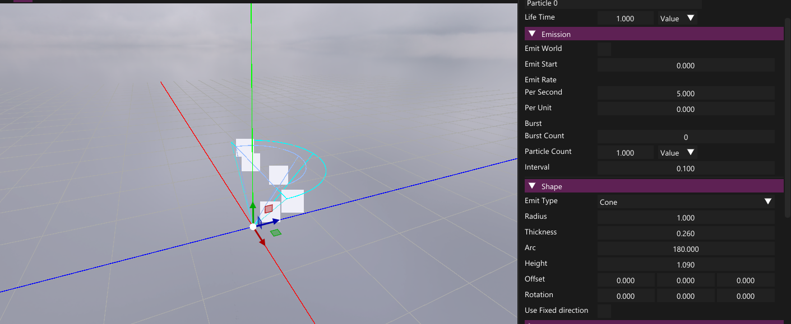
Speed, Size & Rotation
Speed, size and rotation can all be edited for both start values and over time change. For the overtime values, I added an option to make a curve for the value. The curve can have points moved, added and removed. You can also choose if interpolation between points is linear or hermite.
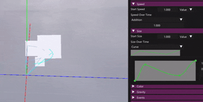
This is the code for the Curve, both how it displays in editor and how it evalutes a value:
1namespace Goose
2{
3 struct CurvePoint
4 {
5 float value = 0.f;
6 float tangent = 0.f;
7 float time = 0.f;
8 };
9
10 class FunctionCurve
11 {
12 public:
13 float Evaluate(float aTime) const;
14
15 std::vector<CurvePoint>& AccessPoints();
16 const std::vector<CurvePoint>& AccessPoints() const;
17
18 bool IsLinear() const;
19 void SetIsLinear(bool aLinear);
20
21 uint8_t DisplayImGuiEdit(const char* aId);
22 protected:
23 void Sort();
24 uint8_t DisplayCurveEdit();
25
26 std::vector<CurvePoint> myPoints{{}, {.value = 1.f, .time = 1.f}};
27 float myMinValue{ 0.f };
28 float myMaxValue{ 1.f };
29 bool myIsLinear = false;
30 };
31}
32
33
34static float HermiteInterpolate(const Goose::CurvePoint& k0, const Goose::CurvePoint& k1, const float t)
35{
36 const float dt = k1.time - k0.time;
37 const float m0 = -k0.tangent * dt;
38 const float m1 = -k1.tangent * dt;
39 const float u = (t - k0.time) / dt;
40
41 const float u2 = u * u;
42 const float u3 = u2 * u;
43
44 // Cubic Hermite spline basis
45 const float h00 = 2 * u3 - 3 * u2 + 1;
46 const float h10 = u3 - 2 * u2 + u;
47 const float h01 = -2 * u3 + 3 * u2;
48 const float h11 = u3 - u2;
49
50 const float result = h00 * k0.value + h10 * m0 + h01 * k1.value + h11 * m1;
51 return result;
52}
53
54float Goose::FunctionCurve::Evaluate(const float aTime) const
55{
56 if (aTime <= myPoints.front().time)
57 {
58 return myPoints.front().value;
59 }
60 if (aTime >= myPoints.back().time)
61 {
62 return myPoints.back().value;
63 }
64
65 CurvePoint prevCurvePoint = myPoints.front();
66 float returnValue{};
67
68 for (const CurvePoint& curvePoint : myPoints)
69 {
70 returnValue = curvePoint.value;
71 if (curvePoint.time > aTime)
72 {
73 if (aTime == 0.f)
74 {
75 break;
76 }
77
78 if (myIsLinear)
79 {
80 const float deltaT = aTime - prevCurvePoint.time;
81 returnValue = prevCurvePoint.value + ((curvePoint.value - prevCurvePoint.value) / (curvePoint.time - prevCurvePoint.time)) *
82 deltaT;
83 }
84 else
85 {
86 returnValue = HermiteInterpolate(prevCurvePoint, curvePoint, aTime);
87 }
88 break;
89 }
90 prevCurvePoint = curvePoint;
91 }
92
93 return returnValue;
94}
95
96std::vector<Goose::CurvePoint>& Goose::FunctionCurve::AccessPoints()
97{
98 return myPoints;
99}
100
101const std::vector<Goose::CurvePoint>& Goose::FunctionCurve::AccessPoints() const
102{
103 return myPoints;
104}
105
106bool Goose::FunctionCurve::IsLinear() const
107{
108 return myIsLinear;
109}
110
111void Goose::FunctionCurve::SetIsLinear(const bool aLinear)
112{
113 myIsLinear = aLinear;
114}
115
116#pragma region ImGuiSection
117
118constexpr ImU32 BACKGROUND_COLOR = IM_COL32(130, 130, 130, 255);
119constexpr ImU32 GRAPH_COLOR = IM_COL32(30, 230, 30, 255);
120constexpr ImU32 POINT_COLOR = IM_COL32(60, 190, 60, 255);
121constexpr ImU32 POINT_HOVER_COLOR = IM_COL32(80, 200, 80, 255);
122constexpr ImU32 POINT_DELETE_COLOR = IM_COL32(190, 40, 40, 255);
123constexpr ImU32 POINT_DELETE_HOVER_COLOR = IM_COL32(210, 60, 60, 255);
124constexpr ImU32 TANGENT_COLOR = IM_COL32(60, 160, 120, 255);
125constexpr ImU32 TANGENT_HOVER_COLOR = IM_COL32(800, 180, 180, 255);
126
127constexpr char CURVE_POP_UP[] = "Curve Popup";
128
129constexpr float MAX_TANGENT = 320.f;
130
131struct CurveImGuiInfo
132{
133 ImVec2 myMouseTracking;
134 int mySelectedPoint = -1;
135 bool myDragTangent = false;
136};
137
138static CurveImGuiInfo localInfo;
139
140uint8_t Goose::FunctionCurve::DisplayImGuiEdit(const char* aId)
141{
142 ImGui::PushID(aId);
143
144 if (globalIsUsingNodeEditor) // This does not display correctly in node editor and is disabled
145 {
146 ImGui::Text("_Variable_Only_");
147 return 0u;
148 }
149
150 constexpr float spacingX = 10.f;
151 constexpr float graphHeight = 30.f;
152
153 const ImVec2 origin = ImGui::GetCursorScreenPos();
154 const float totalWidth = ImGui::GetContentRegionAvail().x * 0.7f - spacingX * 2.f;
155
156 const ImVec2 graphSize = ImVec2(totalWidth, graphHeight);
157
158 ImDrawList* drawList = ImGui::GetWindowDrawList();
159
160 drawList->AddRectFilled(origin, origin + graphSize, BACKGROUND_COLOR);
161
162 for (size_t i = 0; i + 1 < myPoints.size(); ++i)
163 {
164 ImVec2 point1 = origin + ImVec2(totalWidth * myPoints[i].time,
165 FMath::InverseLerp(myMaxValue, myMinValue, myPoints[i].value) * graphHeight);
166 ImVec2 point2 = origin + ImVec2(totalWidth * myPoints[i + 1].time,
167 FMath::InverseLerp(myMaxValue, myMinValue, myPoints[i + 1].value) * graphHeight);
168 drawList->AddLine(point1, point2, GRAPH_COLOR, 1.f);
169 }
170
171 ImGui::Dummy(graphSize);
172
173
174
175 const bool hovered = ImGui::IsItemHovered();
176 if (hovered && ImGui::IsMouseClicked(ImGuiMouseButton_Left))
177 {
178 ImGui::OpenPopup(CURVE_POP_UP);
179 ImGui::SetNextWindowPos(ImGui::GetCursorScreenPos());
180 localInfo = CurveImGuiInfo();
181 }
182 uint8_t info = 0;
183 /*ImGui::SetNextWindowFocus();*/
184 if (ImGui::BeginPopup(CURVE_POP_UP, ImGuiWindowFlags_NoMove))
185 {
186 info |= DisplayCurveEdit();
187 ImGui::EndPopup();
188 }
189
190 ImGui::PopID();
191
192 return info;
193}
194
195void Goose::FunctionCurve::Sort()
196{
197 for (int i = 0; i < static_cast<int>(myPoints.size()); i++)
198 {
199 int bestIndex = i;
200 float lowestTime = myPoints[i].time;
201 for (int j = i + 1; j < static_cast<int>(myPoints.size()); ++j)
202 {
203 if (myPoints[j].time < lowestTime)
204 {
205 bestIndex = j;
206 lowestTime = myPoints[j].time;
207 }
208 }
209
210 std::swap(myPoints[i], myPoints[bestIndex]);
211 if (bestIndex == localInfo.mySelectedPoint)
212 {
213 localInfo.mySelectedPoint = i;
214 }
215 else if (i == localInfo.mySelectedPoint)
216 {
217 localInfo.mySelectedPoint = bestIndex;
218 }
219 }
220}
221
222uint8_t Goose::FunctionCurve::DisplayCurveEdit()
223{
224 constexpr ImVec2 graphOffset = ImVec2(20, 20);
225 constexpr ImVec2 graphSize = {300.f, 100.f};
226 constexpr int graphCurveDetail = 200;
227 constexpr float pointSize = 5.f;
228 constexpr float tangentDistance = pointSize * 4.f;
229
230 constexpr float sideItemsWidth = 50.f;
231 constexpr float sideOffset = 20.f;
232
233 constexpr ImVec2 totalSize = {sideItemsWidth + sideItemsWidth + graphSize.x + graphOffset.x * 2.f, graphSize.y + graphOffset.y * 2.f};
234
235 const ImVec2 origin = ImGui::GetWindowPos() + graphOffset;
236 const ImVec2 sideCursorOrigin = graphOffset + ImVec2(graphSize.x + sideOffset, 0.f);
237
238 const bool deleteMode = ImGui::GetIO().KeyShift && myPoints.size() > 2;
239
240 uint8_t info = 0;
241
242 //Drawing (and deleting)
243 bool hasHovered = false;
244 {
245 ImDrawList* drawList = ImGui::GetWindowDrawList();
246
247 drawList->AddRectFilled(origin, origin + graphSize, BACKGROUND_COLOR);
248
249 if (myIsLinear)
250 {
251 for (size_t i = 0; i + 1 < myPoints.size(); ++i)
252 {
253 ImVec2 point1 = origin + ImVec2(graphSize.x * myPoints[i].time,
254 FMath::InverseLerp(myMaxValue, myMinValue, myPoints[i].value) *
255 graphSize.y);
256 ImVec2 point2 = origin + ImVec2(graphSize.x * myPoints[i + 1].time,
257 FMath::InverseLerp(myMaxValue, myMinValue,
258 myPoints[i + 1].value) * graphSize.y);
259 drawList->AddLine(point1, point2, GRAPH_COLOR, 2.f);
260 }
261
262 const float firstY = FMath::InverseLerp(myMaxValue, myMinValue, myPoints.front().value) * graphSize.
263 y;
264 const float lastY = FMath::InverseLerp(myMaxValue, myMinValue, myPoints.back().value) * graphSize.y;
265
266 drawList->AddLine(origin + ImVec2(0.f, firstY), origin + ImVec2(myPoints.front().time * graphSize.x, firstY), GRAPH_COLOR, 2.f);
267 drawList->AddLine(origin + ImVec2(graphSize.x, lastY), origin + ImVec2(myPoints.back().time * graphSize.x, lastY), GRAPH_COLOR,
268 2.f);
269 }
270 else
271 {
272 ImVec2 points[graphCurveDetail]{};
273
274 constexpr float timeIncrement = 1.f / static_cast<float>(graphCurveDetail);
275 float t = timeIncrement;
276
277 for (int i = 0; i < graphCurveDetail; ++i)
278 {
279 points[i] = origin + ImVec2{
280 t,
281 FMath::InverseLerp(myMaxValue, myMinValue, Evaluate(t))
282 } * graphSize;
283 t += timeIncrement;
284 }
285
286 drawList->AddPolyline(points, graphCurveDetail, GRAPH_COLOR, ImDrawFlags_None, 2.f);
287 }
288
289 const ImU32 defaultColor = deleteMode ? POINT_DELETE_COLOR : POINT_COLOR;
290 const ImU32 hoverColor = deleteMode ? POINT_DELETE_HOVER_COLOR : POINT_HOVER_COLOR;
291
292 for (int i = 0; i < static_cast<int>(myPoints.size()); ++i)
293 {
294 CurvePoint& point = myPoints[i];
295
296 ImVec2 drawPosition = origin + ImVec2(point.time, FMath::InverseLerp(myMaxValue, myMinValue,
297 point.value)) * graphSize;
298
299 const bool selected = localInfo.mySelectedPoint == i;
300 bool hovered = false;
301 if (hasHovered == false && ImGuiUtil::IsMouseOverCircle(drawPosition, pointSize))
302 {
303 hovered = true;
304 hasHovered = true;
305 }
306
307 drawList->AddCircleFilled(drawPosition, pointSize, hovered ? hoverColor : defaultColor);
308
309 if (hovered && ImGui::IsMouseClicked(ImGuiMouseButton_Left))
310 {
311 if (deleteMode)
312 {
313 localInfo.mySelectedPoint = -1;
314 myPoints.erase(myPoints.begin() + i);
315 break;
316 }
317 localInfo.mySelectedPoint = i;
318 localInfo.myMouseTracking = drawPosition;
319 localInfo.myDragTangent = false;
320 }
321
322 if (selected && myIsLinear == false)
323 {
324 const float angle = atanf(point.tangent);
325
326 const ImVec2 tangentVector = {std::cosf(angle), std::sinf(angle)};
327
328 ImVec2 tangentDrawPos = drawPosition + tangentVector * tangentDistance;
329
330 const bool tangentHovered = ImGuiUtil::IsMouseOverCircle(tangentDrawPos, pointSize);
331 hasHovered |= tangentHovered;
332
333 drawList->AddCircleFilled(tangentDrawPos, pointSize, tangentHovered ? TANGENT_HOVER_COLOR : TANGENT_COLOR);
334
335 if (tangentHovered && ImGui::IsMouseClicked(ImGuiMouseButton_Left))
336 {
337 localInfo.myMouseTracking = tangentDrawPos;
338 localInfo.myDragTangent = true;
339 }
340 }
341 }
342 }
343
344 // Edit Points
345 {
346 if (ImGui::IsMouseClicked(ImGuiMouseButton_Left) && hasHovered == false)
347 {
348 if (localInfo.mySelectedPoint != -1)
349 {
350 info |= PropertyEdit::InfoFlag_EditEnded | PropertyEdit::InfoFlag_ChangedValue;
351 }
352
353 localInfo.mySelectedPoint = -1;
354 }
355
356 localInfo.myMouseTracking += ImGui::GetIO().MouseDelta;
357
358 if (localInfo.mySelectedPoint != -1 && ImGui::IsMouseDown(ImGuiMouseButton_Left))
359 {
360 if ((ImGui::GetIO().MouseDelta.x != 0.f) || (ImGui::GetIO().MouseDelta.y != 0.f))
361 {
362 info |= PropertyEdit::InfoFlag_ChangedValue;
363 }
364
365 if (localInfo.myDragTangent)
366 {
367 const ImVec2 pointPosition = origin + ImVec2(myPoints[localInfo.mySelectedPoint].time,
368 FMath::InverseLerp(myMaxValue, myMinValue,
369 myPoints[localInfo.mySelectedPoint].value)) * graphSize;
370
371 ImVec2 directionVector = localInfo.myMouseTracking - pointPosition;
372 directionVector /= sqrtf(directionVector.x * directionVector.x + directionVector.y * directionVector.y);
373 const float angle = FMath::Clamp(acosf(directionVector.x), -FMath::Pi_Almost_Half, FMath::Pi_Almost_Half);
374 const float angleSign = directionVector.y < 0.f ? -1.f : 1.f;
375
376 myPoints[localInfo.mySelectedPoint].tangent = tanf(angle * angleSign);
377 }
378 else
379 {
380 myPoints[localInfo.mySelectedPoint].time = FMath::Clamp(FMath::InverseLerp(origin.x, origin.x + graphSize.x,
381 localInfo.myMouseTracking.x), 0.f, 1.f);
382 myPoints[localInfo.mySelectedPoint].value = FMath::Lerp(myMinValue, myMaxValue,
383 FMath::Clamp(FMath::InverseLerp(origin.y + graphSize.y, origin.y,
384 localInfo.myMouseTracking.y), 0.f, 1.f));
385
386 Sort();
387 }
388 }
389
390 if (ImGui::IsMouseDoubleClicked(ImGuiMouseButton_Left) && localInfo.mySelectedPoint == -1 && hasHovered == false)
391 {
392 constexpr float tolerance = 6.f;
393
394 const float mouseT = FMath::InverseLerp(origin.x, origin.x + graphSize.x, ImGui::GetMousePos().x);
395
396 if (mouseT >= 0.f && mouseT <= 1.f)
397 {
398 const float mouseY = ImGui::GetMousePos().y;
399
400 const float graphValue = Evaluate(mouseT);
401 const float graphY = origin.y + FMath::InverseLerp(myMaxValue, myMinValue, Evaluate(mouseT)) *
402 graphSize.y;
403
404 if (fabsf(mouseY - graphY) < tolerance)
405 {
406 CurvePoint newPoint;
407 newPoint.time = mouseT;
408 newPoint.tangent = 0.f;
409 newPoint.value = FMath::Clamp(graphValue, myMinValue, myMaxValue);
410
411 myPoints.emplace_back(newPoint);
412
413 Sort();
414
415 info |= PropertyEdit::InfoFlag_EditEnded | PropertyEdit::InfoFlag_ChangedValue;
416 }
417 }
418 }
419 }
420
421 // Side items
422 {
423 const float initialMax = myMaxValue;
424 const float initialMin = myMinValue;
425
426 ImGui::PushItemWidth(sideItemsWidth);
427
428 ImGui::SetCursorPos(sideCursorOrigin);
429 info |= ImGuiUtil::DisplayDragFloat("##MaxValue", &myMaxValue, 0.01f);
430 if (ImGui::IsItemHovered())
431 {
432 ImGui::SetTooltip("Max");
433 }
434
435 ImGui::SetCursorPos(ImVec2(sideCursorOrigin.x, ImGui::GetCursorPos().y));
436 info |= ImGuiUtil::DisplayDragFloat("##MinValue", &myMinValue, 0.01f);
437 if (ImGui::IsItemHovered())
438 {
439 ImGui::SetTooltip("Min");
440 }
441
442 ImGui::PopItemWidth();
443
444 if (myMinValue != initialMin || myMaxValue != initialMax)
445 {
446 if (myMinValue >= myMaxValue)
447 {
448 myMinValue = initialMin;
449 myMaxValue = initialMax;
450 }
451 else
452 {
453 info |= PropertyEdit::InfoFlag_ChangedValue;
454
455 for (auto& point : myPoints)
456 {
457 point.value = FMath::Remap(point.value, initialMin, initialMax, myMinValue, myMaxValue);
458 }
459 }
460 }
461
462 ImGui::SetCursorPos(ImVec2(sideCursorOrigin.x, ImGui::GetCursorPos().y));
463 if (ImGui::Checkbox("Linear", &myIsLinear))
464 {
465 info |= PropertyEdit::InfoFlag_EditEnded | PropertyEdit::InfoFlag_ChangedValue;
466 }
467 }
468
469 ImGui::SetCursorPos({0.f, 0.f});
470 ImGui::Dummy(totalSize);
471
472 return info;
473}
474
475#pragma endregion
Color
Particle color can also be edited for both start values and over time change, both using a gradient. The start value will be a random color in the first gradient, and the second gradient is a overtime multiplier.
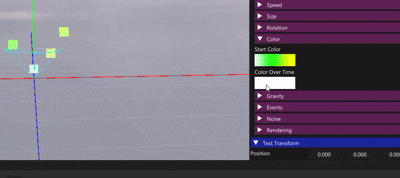
The gradient property was also custom made and has simular code to the curve:
1
2namespace Goose
3{
4 struct ColorKey
5 {
6 Tga::Color color = {1.f, 1.f, 1.f, 1.f};
7 float time = {0.f};
8 };
9
10 class Gradient
11 {
12 public:
13 void Sort();
14 Tga::Color Evaluate(float aTime) const;
15
16 std::vector<ColorKey>& AccessColorKeys();
17 const std::vector<ColorKey>& AccessColorKeys() const;
18
19 uint32_t DisplayImGuiEdit();
20
21 private:
22 uint32_t DisplayGradientEdit();
23
24 void AddGradientToDrawList(const ImVec2& aStart, const ImVec2& aEnd);
25
26 std::vector<ColorKey> myColorKeys = {{}};
27
28 int mySelectedColorKey = -1;
29 float myTrackingX = 0.f;
30 };
31}
32
33static constexpr ImColor HOVERED_COLOR = IM_COL32(240, 240, 240, 255);
34static constexpr ImColor DEFAULT_COLOR = IM_COL32(170, 160, 170, 255);
35static constexpr ImColor DELETE_COLOR = IM_COL32(190, 40, 40, 255);
36static constexpr ImColor DELETE_HOVER_COLOR = IM_COL32(190, 90, 90, 255);
37
38
39constexpr const char* POPUP_NAME = "Curve Popup";
40
41static ImU32 TgaColorConvertToU32(const Tga::Color& in)
42{
43 ImU32 out = static_cast<ImU32>(IM_F32_TO_INT8_SAT(in.r)) << IM_COL32_R_SHIFT;
44 out |= static_cast<ImU32>(IM_F32_TO_INT8_SAT(in.g)) << IM_COL32_G_SHIFT;
45 out |= static_cast<ImU32>(IM_F32_TO_INT8_SAT(in.b)) << IM_COL32_B_SHIFT;
46 out |= static_cast<ImU32>(IM_F32_TO_INT8_SAT(in.a)) << IM_COL32_A_SHIFT;
47 return out;
48}
49void Goose::Gradient::Sort()
50{
51 for (int i = 0; i < static_cast<int>(myColorKeys.size()); i++)
52 {
53 int bestIndex = i;
54 float lowestTime = myColorKeys[i].time;
55 for (int j = i + 1; j < static_cast<int>(myColorKeys.size()); ++j)
56 {
57 if (myColorKeys[j].time < lowestTime)
58 {
59
60 bestIndex = j;
61 lowestTime = myColorKeys[j].time;
62 }
63 }
64
65 std::swap(myColorKeys[i], myColorKeys[bestIndex]);
66 if (bestIndex == mySelectedColorKey)
67 {
68 mySelectedColorKey = i;
69 }
70 else if (i == mySelectedColorKey)
71 {
72 mySelectedColorKey = bestIndex;
73 }
74 }
75}
76
77Tga::Color Goose::Gradient::Evaluate(float aTime) const
78{
79 if (myColorKeys.size() == 1)
80 {
81 return myColorKeys.front().color;
82 }
83
84 aTime = FMath::Clamp(aTime, 0.f, 1.f);
85
86 Tga::Color previousColor = myColorKeys.front().color;
87 float previousTime = 0.f;
88 Tga::Color returnColor;
89
90
91 for (const ColorKey& colorKey : myColorKeys)
92 {
93 returnColor = colorKey.color;
94 if (colorKey.time > aTime)
95 {
96 if (aTime == 0.f)
97 {
98 break;
99 }
100
101 const float lerpTime = (aTime - previousTime) / (colorKey.time - previousTime);
102 returnColor = FMath::Lerp(previousColor, colorKey.color, lerpTime);
103 break;
104 }
105 previousTime = colorKey.time;
106 previousColor = colorKey.color;
107 }
108
109 return returnColor;
110}
111
112std::vector<Goose::ColorKey>& Goose::Gradient::AccessColorKeys()
113{
114 return myColorKeys;
115}
116
117const std::vector<Goose::ColorKey>& Goose::Gradient::AccessColorKeys() const
118{
119 return myColorKeys;
120}
121
122uint32_t Goose::Gradient::DisplayImGuiEdit()
123{
124 uint8_t info = 0;
125
126
127
128 constexpr float spacingX = 10.f;
129 constexpr float graphHeight = 30.f;
130
131 if (globalIsUsingNodeEditor) // This does not display correctly in node editor and is disabled
132 {
133 ImGui::Text("_Variable_Only_");
134 return 0u;
135 }
136
137 const ImVec2 origin = ImGui::GetCursorScreenPos();
138 const float totalWidth = FMath::Min(ImGui::GetContentRegionAvail().x * 0.7f - spacingX * 2.f, 100.f);
139 const ImVec2 graphSize = ImVec2(totalWidth, graphHeight);
140
141 AddGradientToDrawList(origin, origin + graphSize);
142
143 ImGui::Dummy(graphSize);
144
145 const bool hovered = ImGui::IsItemHovered();
146 if (hovered && ImGui::IsMouseClicked(ImGuiMouseButton_Left))
147 {
148 ImGui::OpenPopup(POPUP_NAME);
149 ImGui::SetNextWindowPos(ImGui::GetCursorScreenPos());
150 }
151
152 if (ImGui::BeginPopup(POPUP_NAME, ImGuiWindowFlags_NoMove))
153 {
154 info |= DisplayGradientEdit();
155 ImGui::EndPopup();
156 }
157
158 return info;
159}
160
161uint32_t Goose::Gradient::DisplayGradientEdit()
162{
163 uint32_t info = 0;
164
165 const bool deleteMode = ImGui::GetIO().KeyShift && myColorKeys.size() > 1;
166
167 constexpr float spacingX = 10.f;
168 constexpr float spacingY = 10.f;
169 constexpr float keySize = 30.f;
170
171
172 const ImVec2 origin = ImGui::GetWindowPos() + ImVec2{0.f,spacingY };
173 constexpr float totalWidth = 300.f;
174
175 const float startX = origin.x + spacingX;
176 const float endX = startX + totalWidth;
177 constexpr float gradientShowcaseHeight = 30.f;
178
179 ImDrawList* drawList = ImGui::GetWindowDrawList();
180 constexpr ImVec2 totalSize{ totalWidth,gradientShowcaseHeight + keySize + spacingY * 2.f };
181
182 bool hasBeenHovered = false;
183
184 const ImVec2 lineStartPoint = origin + ImVec2(0.f, keySize);
185 const ImVec2 lineEndPoint = origin + ImVec2(totalWidth, keySize);
186
187 drawList->AddLine(lineStartPoint, lineEndPoint, IM_COL32(200, 200, 200, 254), 2.f);
188
189 const ImColor noHoverColor = deleteMode ? DELETE_COLOR : DEFAULT_COLOR;
190 const ImColor hoverColor = deleteMode ? DELETE_HOVER_COLOR : HOVERED_COLOR;
191
192 const int initialSelected = mySelectedColorKey;
193
194 for (int i = 0; i < static_cast<int>(myColorKeys.size()); ++i)
195 {
196 ImGui::PushID(i);
197
198 const float xPosition = FMath::Lerp(startX, endX, myColorKeys[i].time);
199
200 ImVec2 drawPos = ImVec2(xPosition, keySize) + ImVec2{0.f,origin.y};
201
202 const Tga::Color initialColor = myColorKeys[i].color;
203
204 ImGui::SetCursorScreenPos(ImVec2(drawPos.x - 12.5f, drawPos.y - 30.f)); // 4
205 ImGui::ColorEdit4("##ColorEdit", myColorKeys[i].color.myValues, ImGuiColorEditFlags_NoInputs);
206
207 if (initialColor != myColorKeys[i].color)
208 {
209 info |= PropertyEdit::InfoFlag_ChangedValue;
210 }
211 if (ImGui::IsItemDeactivatedAfterEdit())
212 {
213 info |= PropertyEdit::InfoFlag_EditEnded;
214 }
215
216 bool hovered = false;
217 if (hasBeenHovered == false)
218 {
219 hovered = ImGui::IsMouseHoveringRect(drawPos - ImVec2(5.f, 5.f), drawPos + ImVec2(5.f, 5.f));
220 hasBeenHovered |= hovered;
221 }
222
223 drawList->AddCircleFilled(drawPos, 5.f, hovered ? hoverColor : noHoverColor);
224
225 if (ImGui::IsMouseClicked(ImGuiMouseButton_Left) && hovered)
226 {
227 if (deleteMode)
228 {
229 myColorKeys.erase(myColorKeys.begin() + i);
230 i--;
231 info |= PropertyEdit::InfoFlag_EditEnded;
232 info |= PropertyEdit::InfoFlag_ChangedValue;
233 }
234 else
235 {
236 mySelectedColorKey = static_cast<int>(i);
237 myTrackingX = xPosition + origin.x;
238 }
239
240 }
241
242 ImGui::PopID();
243 }
244
245 if (hasBeenHovered == false && ImGui::IsMouseDoubleClicked(ImGuiMouseButton_Left))
246 {
247 if (ImGui::IsMouseHoveringRect(lineStartPoint - ImVec2(2.f, 2.f), lineEndPoint + ImVec2(2.f, 2.f)))
248 {
249 ColorKey newColorKey;
250 newColorKey.time = FMath::Clamp(FMath::InverseLerp(startX, endX, ImGui::GetMousePos().x), 0.f, 1.f);
251
252 myColorKeys.emplace_back(newColorKey);
253
254 info |= PropertyEdit::InfoFlag_EditEnded;
255 info |= PropertyEdit::InfoFlag_ChangedValue;
256
257 Sort();
258 }
259 }
260
261
262 const ImVec2 gradientShowcaseRoot = lineStartPoint + ImVec2(0.f, 10.f);
263
264 AddGradientToDrawList(gradientShowcaseRoot, gradientShowcaseRoot + ImVec2{ totalWidth,gradientShowcaseHeight });
265
266 ImGui::SetCursorScreenPos(origin + ImVec2(0.f, gradientShowcaseHeight + 20.f));
267
268 if (ImGui::IsMouseReleased(ImGuiMouseButton_Left))
269 {
270 if (mySelectedColorKey != -1)
271 {
272 info |= PropertyEdit::InfoFlag_EditEnded;
273 }
274 mySelectedColorKey = -1;
275 }
276
277 myTrackingX += ImGui::GetIO().MouseDelta.x;
278
279 if (mySelectedColorKey != -1)
280 {
281 if (ImGui::GetIO().MouseDelta.x != 0.f)
282 {
283 info |= PropertyEdit::InfoFlag_ChangedValue;
284 }
285
286 myColorKeys[mySelectedColorKey].time = FMath::InverseLerp(startX, endX, myTrackingX - origin.x);
287 myColorKeys[mySelectedColorKey].time = FMath::Clamp(myColorKeys[mySelectedColorKey].time, 0.f, 1.f);
288
289 Sort();
290 }
291
292 if (initialSelected != mySelectedColorKey)
293 {
294 info |= PropertyEdit::InfoFlag_ChangedValue;
295 }
296
297 ImGui::SetCursorPos({ 0.f, 0.f });
298 ImGui::Dummy(totalSize);
299
300 return info;
301}
302
303void Goose::Gradient::AddGradientToDrawList(const ImVec2& aStart, const ImVec2& aEnd)
304{
305 const float gradientShowcaseHeight = aEnd.y - aStart.y;
306 float lastX = aStart.x;
307 ImColor lastColor = TgaColorConvertToU32(myColorKeys.front().color);
308
309 ImDrawList* drawList = ImGui::GetWindowDrawList();
310 for (size_t i = 0; i < myColorKeys.size(); ++i)
311 {
312 ImColor currentColor = TgaColorConvertToU32(myColorKeys[i].color);
313 const float xPosition = FMath::Lerp(aStart.x, aEnd.x, myColorKeys[i].time);
314
315 const ImVec2 subSize = ImVec2(xPosition - lastX, gradientShowcaseHeight);
316 const ImVec2 subCorner = ImVec2{ 0.f,aStart.y } + ImVec2(lastX, 0.f);
317
318 drawList->AddRectFilledMultiColor(subCorner, subCorner + subSize, lastColor, currentColor, currentColor, lastColor);
319
320 lastColor = currentColor;
321 lastX = xPosition;
322 }
323 {
324 ImColor currentColor = TgaColorConvertToU32(myColorKeys.back().color);
325 const float xPosition = aEnd.x;
326
327 const ImVec2 subSize = ImVec2(xPosition - lastX, gradientShowcaseHeight);
328 const ImVec2 subCorner = ImVec2{ 0.f,aStart.y } + ImVec2(lastX, 0.f);
329
330 drawList->AddRectFilledMultiColor(subCorner, subCorner + subSize, lastColor, currentColor, currentColor, lastColor);
331 }
332}
Rendering
In the rendering tab, you can assign material to render with and what type of particle to render. The default type is a Billboarded sprite. Another sprite option is Velocity Sprite, which will align the sprite’s y-axis to the direction it travels in and then rotate it along the y-axis towards the camera.
There are also different UV options. You can choose to scale the UV and render with random parts.
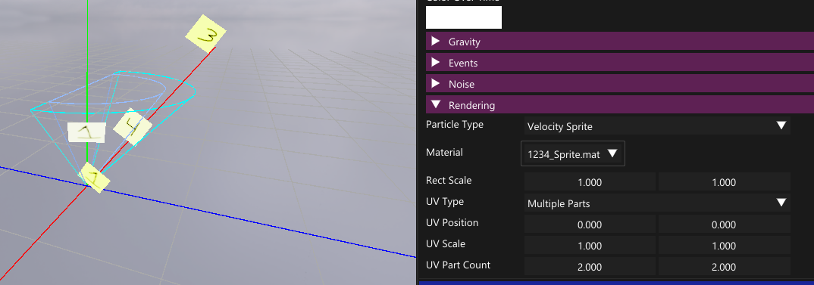
The last particle type is Mesh. Having this option on will also enable rotation-options around the x and y axis.
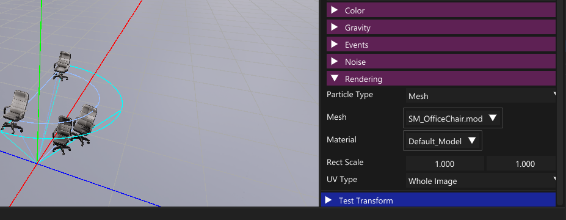
Multiple Emitors
A particle system supports multiple emitors, aLlowing for multiple particle types in one system.
Additionaly, you can add events, that executes on particle birth or death/, that can trigger a specifik emitor.
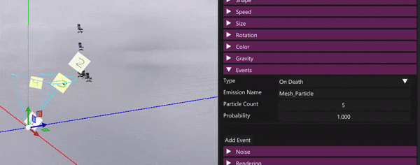
Gravity & Noise
This was the last feature I added to the particle editor. Gravity will apply a force on the particle overtime, and you can choose if the gravity direction is down or towards a certain point.
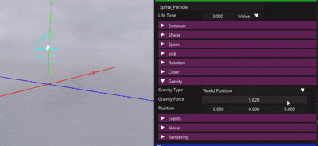
Noise will psuedo-randomly offet the particle depending on its position. Strength controlls how big the offset is, frequency how big the variation is and update time how often the noise is recalculated
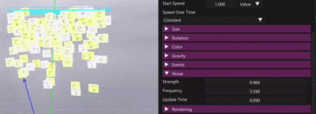